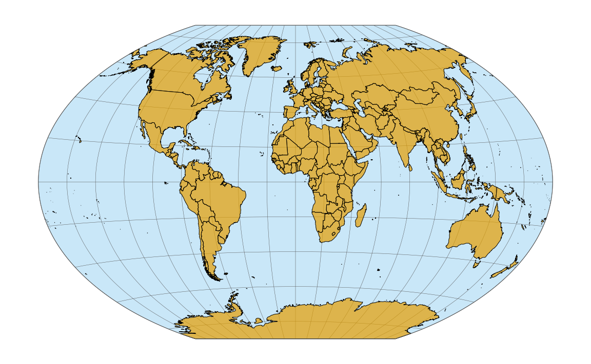

The Winkel tripel projection is widely used for world maps. It was proposed by Oswald Winkel in 1921, and it attempts to minimize three kinds of distortion: area, direction, and distance. In 1998, this projection was adopted by the National Geographic Society as the standard projection for world maps. One challange in using this projection with ggplot2 is that it is not supported by the sf package out of the box. Therefore, we have to do some things manually that otherwise coord_sf() would take care of for us.
For this example, we will use the following packages.
library(tidyverse)
library(cowplot) # for theme_map()
library(sf) # for manipulation of simple features objects
library(lwgeom) # for st_transform_proj()
library(rworldmap) # for getMap()We obtain a basic map of the world via the getMap() function from the rworldmap package.
world_sf <- st_as_sf(getMap(resolution = "low"))
ggplot(world_sf) +
geom_sf(size = 0.5/.pt) +
theme_map()
Now we reproject using the Winkel tripel projection. This projection is not supported by the sf package. Instead, we need to project manually using lwgeom::st_transform_proj(). We also need to add coord_sf(datum = NULL) to make sure sf doesn’t try (and fail) to generate a graticule.
crs_wintri <- "+proj=wintri +datum=WGS84 +no_defs +over"
world_wintri <- st_transform_proj(world_sf, crs = crs_wintri)
ggplot(world_wintri) +
geom_sf(size = 0.5/.pt) +
coord_sf(datum = NULL) +
theme_map()
We add the graticule manually by creating it in longitude–latitude coordinates and then transforming it to Winkel tripel.
grat_wintri <-
st_graticule(lat = c(-89.9, seq(-80, 80, 20), 89.9)) %>%
st_transform_proj(crs = crs_wintri)We can plot the graticule with geom_sf().
ggplot() +
geom_sf(data = grat_wintri, color = "gray30", size = 0.25/.pt) +
coord_sf(datum = NULL) +
theme_map()
And we can plot the world on top of the graticule.
ggplot() +
geom_sf(data = grat_wintri, color = "gray30", size = 0.25/.pt) +
geom_sf(data = world_wintri, color = "black", size = 0.5/.pt) +
coord_sf(datum = NULL) +
theme_map()Next, we want to color the oceans blue. We do this by generating a polygon that corresponds to the shape of the globe.
# vectors of latitudes and longitudes that go once around the
# globe in 1-degree steps
lats <- c(90:-90, -90:90, 90)
longs <- c(rep(c(180, -180), each = 181), 180)
# turn into correctly projected sf collection
wintri_outline <-
list(cbind(longs, lats)) %>%
st_polygon() %>%
st_sfc( # create sf geometry list column
crs = "+proj=longlat +ellps=WGS84 +datum=WGS84 +no_defs"
) %>%
st_sf() %>%
st_transform_proj(crs = crs_wintri) # transform to Winkel tripel
# the resulting data frame
wintri_outline## Simple feature collection with 1 feature and 0 fields
## geometry type: POLYGON
## dimension: XY
## bbox: xmin: -16396890 ymin: -10018750 xmax: 16396890 ymax: 10018750
## epsg (SRID): NA
## proj4string: +proj=wintri +datum=WGS84 +no_defs +over
## geometry
## 1 POLYGON ((6378137 10018754,...# and plotted with geom_sf()
ggplot() +
geom_sf(
data = wintri_outline,
fill = "#56B4E950", color = "grey30", size = 0.5/.pt
) +
coord_sf(datum = NULL) +
theme_map()
Now we plot everything together. We plot the outline polygon twice, once at the bottom filled but without line color and once on the top without fill but with line color, to create a crips outline for our world map.
ggplot() +
geom_sf(data = wintri_outline, fill = "#56B4E950", color = NA) +
geom_sf(data = grat_wintri, color = "gray30", size = 0.25/.pt) +
geom_sf(data = world_wintri, color = "black", size = 0.5/.pt) +
geom_sf(data = wintri_outline, fill = NA, color = "grey30", size = 0.5/.pt) +
coord_sf(datum = NULL) +
theme_map()
As a final tweak, we change the fill color for the land masses.
ggplot() +
geom_sf(data = wintri_outline, fill = "#56B4E950", color = NA) +
geom_sf(data = grat_wintri, color = "gray30", size = 0.25/.pt) +
geom_sf(
data = world_wintri,
fill = "#E69F00B0", color = "black", size = 0.5/.pt
) +
geom_sf(data = wintri_outline, fill = NA, color = "grey30", size = 0.5/.pt) +
coord_sf(datum = NULL) +
theme_map()